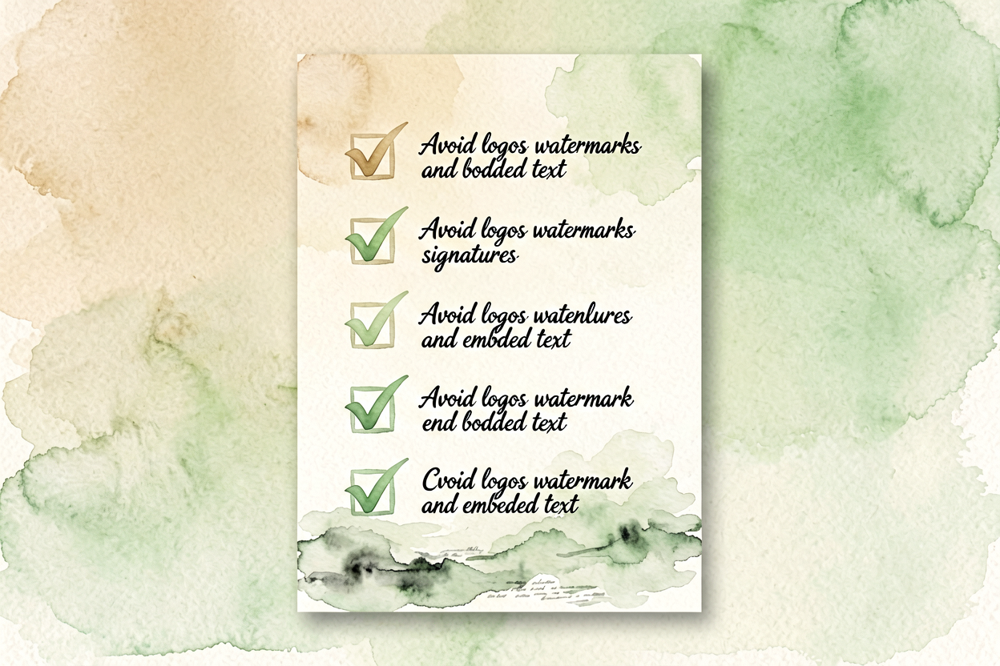

Claude新手入门指南：从零学会高效写作与文档处理
第一次接触Claude不知道如何写出高质量提示词？从零注册到熟练运用，本文带你快速掌握这个AI写作利器。
Claude新手入门是本文的核心主题，下面详细介绍如何使用。
Claude新手入门：了解核心能力
Claude是由Anthropic公司开发的对话式AI模型，以长文本处理和高质量文本生成为特点。它擅长理解复杂指令、处理长文档、生成结构化内容。与ChatGPT相比，Claude在写作任务上通常表现更稳定，输出更连贯。
新手使用Claude前，先理解它的设计初衷。Claude不是为了聊天而设计，而是为了解决实际问题——写邮件、整理文档、分析数据。把Claude当作一个高效的助理，而不是娱乐工具，使用效果会好很多。
Claude新手入门：注册与访问

访问Claude官网，注册Anthropic账号。目前Claude有网页版和API两种使用方式。网页版适合个人用户，有免费额度；API适合开发者，按需付费。注册后用邮箱登录，进入对话界面。
界面布局简单：左侧是历史记录，右侧是聊天区域，底部是输入框。输入框上方有模型选择器，可以选择Claude 3.5 Sonnet或最新模型。首次使用时，建议从简单任务开始，比如「帮我写一段自我介绍」。
Claude新手入门：提示词写作

Claude新手入门的关键是提示词写作。Claude对提示词的要求与其他模型类似，但它在处理复杂指令时表现更稳定。关键原则是：角色清晰、任务明确、格式具体、边界清晰。
Claude提示词示例：
角色：资深文案策划
任务：写一篇产品推广文案
风格：轻松活泼，适合社交媒体
字数：200字以内Claude新手入门：应用场景

Claude新手入门后，可以创建多种场景的智能体。客服助手自动回答常见问题，减轻人工负担。写作助手帮你生成文案、润色文章、改写风格。数据分析助手处理表格、生成报告、可视化结果。
参考其他AI工具的使用心得，形成完整工作流。
Claude新手入门：注意事项

Claude新手入门过程中，要避免几个误区。不要一次给太多信息，分批处理效果更好。不要依赖Claude的事实性回答，关键数据必须验证。不要重复问相同问题，会浪费额度。
使用Claude时，记住它是辅助工具，不是替代你思考。输出的内容要自己把关，特别是涉及决策的内容。别让Claude替代你的判断，它只是工具，关键决策仍要自己把关。不要盲目信任AI生成的每一个字。
Claude新手入门：实际案例演示

以一个实际案例说明Claude的使用效果。假设你需要写一篇产品推广文案，可以先用Claude生成初稿，再手动调整语气和细节。比如「请写一篇关于智能手表的产品推广文案，目标用户是25-35岁职场人士，突出健康监测和长续航功能」。Claude生成的初稿通常结构清晰、内容完整，你只需微调即可。另一个常见场景是会议纪要整理，把原始录音转文字的内容粘贴给Claude，让它提取关键决策和待办事项，效率提升明显。以上是关于Claude新手入门的完整指南。

本文信息核对于 2026-09-07。AI 产品的价格、免费额度与功能变动频繁，实际以各工具官网当前说明为准。